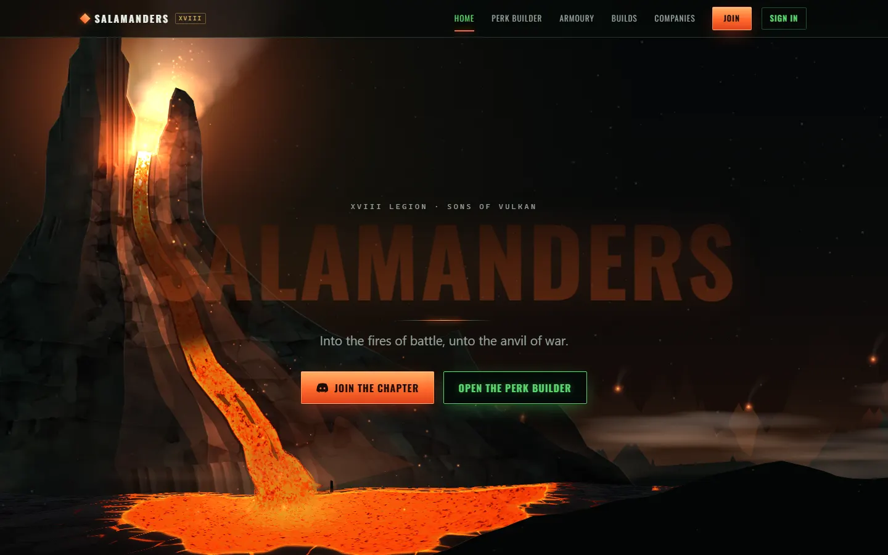
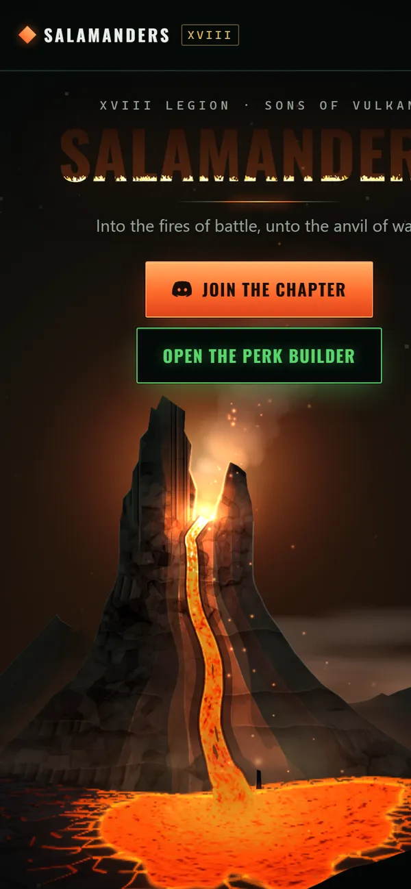
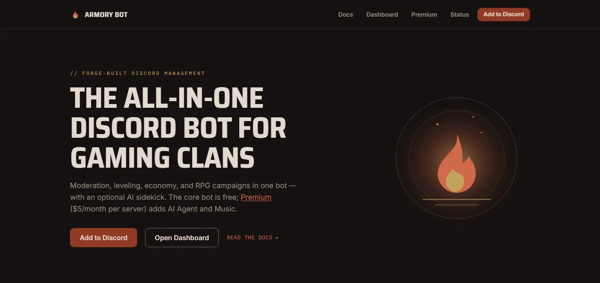
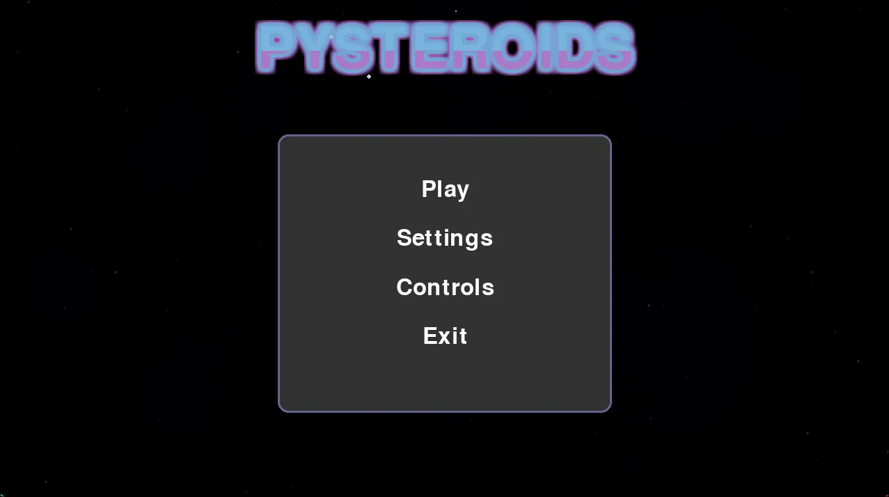
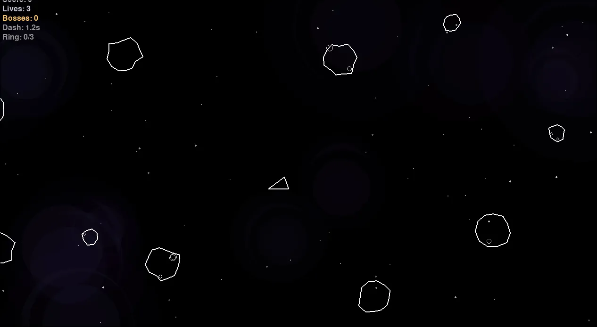

sm2salamanders.site
The clan site for the Salamanders, our Warhammer 40,000: Space Marine 2 community. Members plan perk builds, browse the armoury, share builds, and read the order of battle and the Legion Archive. Most of them do it on their phones, so it was built phone-first.
- Built with
- Vue 3, Vite and Tailwind, with a small Bun + Postgres API
- Used by
- The Salamanders, on several continents
Armory Bot
A Discord bot for running a community: moderation and auto-mod, leveling, an economy with a shop and bounties, button roles, timers, temporary voice channels, custom commands, and an AI agent for jokes, roasts and questions. It started as a small bot for the Salamanders server and grew a web dashboard and an API of its own.
- Built with
- Python and discord.py, a FastAPI backend, a Vue dashboard, PostgreSQL
- Used by
- 10,000+ people, and climbing



Pysteroids
My take on Asteroids, in Python and Pygame. Boss asteroids with escalating health, power-ups, a dash that makes you briefly invincible, and ring blasts in ice, fire and lightning. Minimum spec, per the README: it will run on a potato if it has Python.
It's a free download on itch.io. A version you can play right here in the browser is on the list.
- WASD
- Fly
- Mouse or Space
- Aim and fire
- Left Shift
- Dash
- R
- Ring blast
- Esc
- Pause
This site
bretzanotelli.work, the page you're reading. A hand-rolled Python generator with no dependencies, my name burning in the Doom fire, a weekly Spotify chart and a Steam block kept fresh by GitHub Actions, and a guestbook on a Cloudflare Worker. I wrote up how each piece works.
Smaller builds
-
admin-toolkit
A terminal UI in Go that finds my PowerShell admin scripts, asks for their parameters in plain language, and streams the output.
Go · PowerShell
-
termulizer
A music visualizer for the terminal, because I missed the Winamp and Media Player visualizers growing up.
Go · Lua · source private for now
-
Better-Windows-Calendar
A calendar for Windows and Linux that gets along with Waybar and Komorebi. Under construction.
Go
-
game_overlay
A Diablo 4 overlay, with other games to follow. Work in progress.
Go · Python · source private for now
-
Go-kedex
The boot.dev Pokédex project: a REPL that walks the PokéAPI, with a cache.
Go
-
advent_2025
My Advent of Code 2025 solutions. The dev diary has the pain in more detail.
Python
What I build on
- Desktop
- Windows for nearly everything. Linux over SSH when I need it, and to get into the home server.
- Editor
- NeoVim with LazyVim. VS Code is still installed, as a backup.
- Home server
- A spare computer running Debian, with a Samba file share and PiHole.
- Languages
- Python, Go, PowerShell and Bash most days. Vue and Tailwind when a site needs them.
- Learning
- A B.S. in IT at WGU, and the boot.dev backend track.